WITH AN INCREDIBLE NUMBER OF ACCOMPLISHMENTS TO THE NAME, WILLIAMSTOWN THEATRE FESTIVAL HAS ESTABLISHED ITS 70-YEAR LEGACY AS AN ESSENTIAL INSTITUTION.
WITH AN INCREDIBLE NUMBER OF ACCOMPLISHMENTS TO THE NAME, WILLIAMSTOWN THEATRE FESTIVAL HAS ESTABLISHED ITS 70-YEAR LEGACY AS AN ESSENTIAL INSTITUTION.
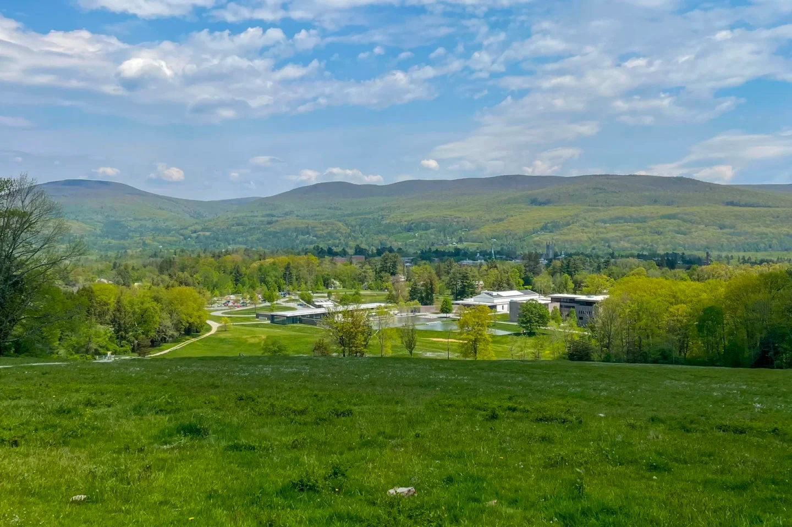
WE’VE MADE ESSENTIAL CONTRIBUTIONS TO THE LANDSCAPE OF THE AMERICAN THEATRE
Williamstown Theatre Festival has a history of developmental work and full productions continuing life on Broadway, Off-Broadway and regionally. This season alone, Williamstown Theatre Festival is represented on Broadway by both Here Lies Love and Lempicka. Other Broadway, Off-Broadway, and regional representation has included The Elephant Man, The Bridges of Madison County, The Sound Inside, The Visit, Fool for Love, Choir Boy, Paradise Blue, Grand Horizons, The Rose Tattoo, Seared, Selling Kabul, Unknown Soldier, One Mo' Time, Hedda Gabler, The Man Who Had All the Luck, and See What I Wanna See, among others.
Cost of Living, which was developed and premiered at Williamstown Theatre Festival, was awarded the 2018 Pulitzer Prize for Drama and made its debut on Broadway in Fall 2022. English, which was awarded Williamstown Theatre Festival’s 2020 L. Arnold Weissberger New Play Award, was also awarded the 2023 Pulitzer Prize for Drama.
English, 2023 Pulitzer Prize Winner
WE’VE MADE ESSENTIAL CONTRIBUTIONS TO THE LANDSCAPE OF THE AMERICAN THEATRE
A few of the Williamstown productions that have had a continuing life on Broadway, Off-Broadway and regionally.
WE’VE TRAINED, DEVELOPED, AND ENRICHED GENERATIONS OF THEATRE ARTISTS…
Thousands of notable artists have graced our stages or have gotten their start at Williamstown.
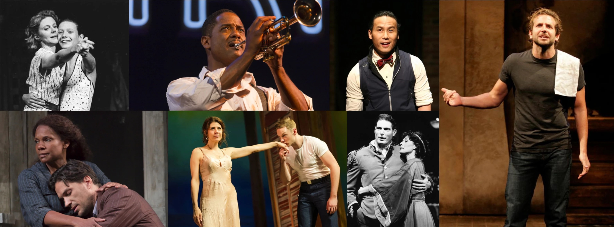
WE’VE TRAINED, DEVELOPED, AND ENRICHED GENERATIONS OF THEATRE ARTISTS…
Just 100 of the notable artists who have graced our stage
Bradley Cooper
Jessica Chastain
Gwyneth Paltrow
Chris Pine
Viola Davis
Michelle Williams
Sigourney Weaver
Kate Hudson
Audra McDonald
David Schwimmer
Matthew Broderick
Marisa Tomei
Uma Thurman
Brie Larson
Blair Underwood
Blythe Danner
Elizabeth Banks
Sterling K. Brown
Kathryn Hahn
Allison Janney
Ashley Park
Amanda Seyfried
Peter Dinklage
Mary-Louise Parker
Rob Lowe
Chris Messina
Lily Rabe
Matthew Perry
Calista Flockhart
Patricia Clarkson
Cicely Tyson
Charlie Day
Justin Long
Stockard Channing
Dianne Wiest
Emmy Rossum
Thomas Sadoski
Paul Giamatti
Jim Belushi
Mary Tyler Moore
Christopher Walken
Christopher Reeve
Kate Burton
James Naughton
Tony Goldwyn
Ty Burrell
Olympia Dukakis
Tyne Daly
David Hyde Pierce
Louisa Jacobson
Arthur Miller
Dominique Morisseau
George C. Wolfe
Susan Stroman
Bernadette Peters
Chita Rivera
Nathan Lane
Sam Rockwell
Jessica Hecht
Frank Langella
Betty Buckley
Elizabeth Marvel
Laura Benanti
Marian Seldes
Andrea Martin
F. Murray Abraham
Jeremy Shamos
Bebe Neuwirth
Mandy Patinkin
Katie Finneran
Bill Irwin
Judith Light
Elaine Stritch
Linda Lavin
B.D. Wong
Cherry Jones
Philippa Soo
Nina Arianda
Jefferson Mays
Ann Reinking
Betsy Aidem
Austin Pendleton
Becky Ann Baker
Dylan Baker
Christopher Fitzgerald
Ruben Santiago-Hudson
Gayle Rankin
Kelli O’Hara
Steven Pasquale
Joel Grey
Meritt Weaver
Alec Baldwin
Sam Waterson
Paul Sparks
Tim Daly
Mamie Gummer
Grace Gummer
Alison Pill
Jesse Tyler Fergerson
John Benjamin Hickey
…AND WE’VE SHAPED THEIR CAREERS
“I loved the energy in Williamstown and it is where I learned how to build shows from the ground up. That experience has been irreplaceable for me in my career. My time at Williamstown gave me a huge advantage and introduced me to many of the people with whom I collaborate today.”
— David Korins
…AND WE’VE SHAPED THEIR CAREERS
“Williamstown moves the art form forward. It’s a safe, beautiful place to work on new material or material that’s being imagined in a new way. It takes risks. What’s wonderful about Williamtown is not only do you have this incredible festival that is so rich with talent, but you are blessed with an incredibly supportive audience that wants to be provoked. They come to this festival to be challenged, to see new things and new perspectives.”
— Audra McDonald
…AND WE’VE SHAPED THEIR CAREERS
“I have tremendous gratitude that WTF was such an indelible part of my childhood, and that it provided the nest to incubate my artistic growth.”
— Gwyneth Paltrow
…AND WE’VE SHAPED THEIR CAREERS
“Williamstown is a place of theater miracles. It has created a community of artists who have become loyal over the years because it is a place where one can truly experiment outside of the commercial limelight and produce world-class theater. Williamstown has cultivated an audience that appreciates the breadth of work that the theater does. It helps artists create productions that are refreshing and revolutionary.”
— Clint Ramos
“Because I had worked at Williamstown, I had a certain credibility. My experience there went a long way in building my career, and it certainly taught me to survive under pressure.”
— Santo Loquasto
“WTF was the artistic version of the wild, wild, West—it affected everything else I ever did.”
— Austin Pendleton
“I loved the energy in Williamstown and it is where I learned how to build shows from the ground up. That experience has been irreplaceable for me in my career. My time at Williamstown gave me a huge advantage and introduced me to many of the people with whom I collaborate today.”
— David Korins
“Williamstown is like summer camp for anybody who loves the theater. There is a spirit of collaboration. You can really laser-focus on the work.”
— Blair Underwood
“Some of our greatest actors started at Williamstown. You can drive down Sunset Boulevard in Los Angeles and you can literally go Williamstown, Williamstown, Williamstown, Williamstown. I knew all of those actors had been to Williamstown at some point in their lives. That’s extraordinary.”
— Kate Burton
“Williamstown has taken really good care of me. It gives you creative space to try things out and make mistakes and try again. To put my work up here says something about fostering a new generation of writers and the value of a diversity of voices, of women’s voices, of people of color.”
— Dominique Morisseau
“I always want to come back to Williamstown—it is in my blood. Williamstown has passed on a legacy in a country that doesn’t really have a national theatre: working with great plays, actors passing on what they know to a younger generation, both by intent and by osmosis. That is the lifeblood of the WTF that lives in me, all those I saw on stage and got to work with.”
— David Hyde Pierce
“All roads seem to lead back to WTF. There is an unspoken immediate bond amongst the WTF alumni, perhaps it was the sleepless nights both at work and at play, the pride in accomplishing daring and amazing feats of theater both successful and disastrous.”
— Linda Cho
WE’VE BEEN CELEBRATED AS A PIVOTAL AMERICAN THEATRE, DESPITE ONLY OPERATING DURING THE SUMMER
In 2002, the Williamstown Theatre Festival was awarded the Regional Theatre Tony Award, an award that honors artistic achievement contributing to the growth of theatre nationally.
Additionally, Williamstown has premiered and developed plays and musicals that have gone on to win Tony Awards of their own, Pulitzer Prizes, and many other industry awards recognizing an achievement of excellence.
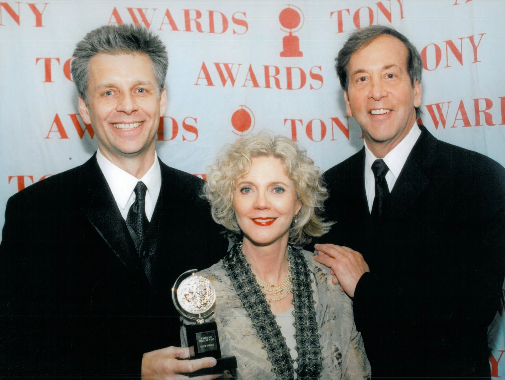
WE’VE HAD CULTURAL AND ECONOMIC IMPACT ON OUR LOCAL COMMUNITY
From our inception, we’ve been part of the fabric of the economy of the Berkshires. In addition to the tourism our programming has brought to the community, we have a history of employing local staff and artists, providing income to local businesses involved in supporting our festival, and generating revenue from ticket sales and sponsorships.
Our cultural influence on the local community has also been significant. We’ve made the Berkshires a destination for theatergoing, for audiences and artists alike. As recently as July 2023, a critic from the NY Times wrote: “Over a couple of days in Western Massachusetts last week, I saw two plays, one play reading and one cabaret, and if you looked at the quality of what was there — rather than the quantity of what was not — you’d hardly know that anything was amiss.”
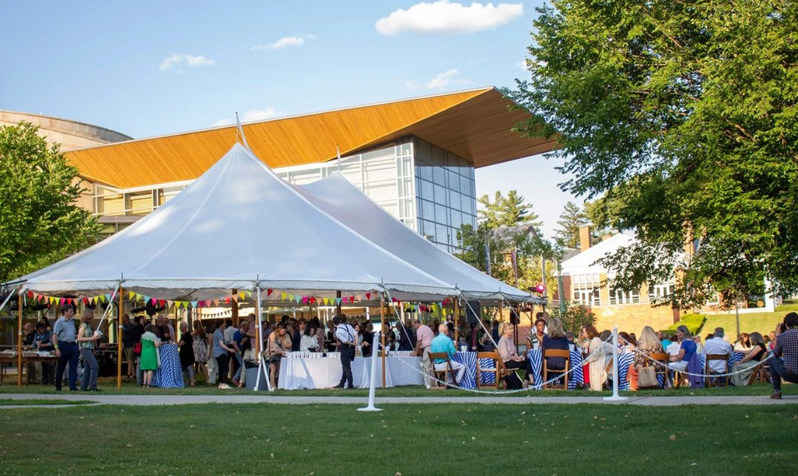
THOSE WHO KNOW AND HAVE EXPERIENCED THE FESTIVAL, DESCRIBE ITS MAGIC IN AN INSPIRING WAY.
“I remember the excitement of a full day of WTF rehearsals, sets being delivered, local community theater, matinees, evening performances, audiences arriving from everywhere, experimental theater in the smaller spaces, excited crowds waiting to have their ticket taken and getting a program, the after hours cabaret, the “famous” actors walking about town.”
— Marge Chamberlain, Audience / Local Community / Volunteer + WTF Guild Member
“Williamstown was the first theater festival to announce that they are bringing changes to their system, and I think naturally I'm an artist who wants to be part of the change. So I joined last year, and it was a lot of experimentation, and it was a lot of newness that I thrived off of. This year there was even more changes, and I felt like my time was not done. So again, I think just the impulse I have as an artist is to follow the change, and I found that at Williamstown..”
— Isabel Rodriguez, Artist
“The Berkshires are just like a magical, beautiful setting. There's no way to not be super close with all the people that you're working with when the people are the thing, people and the landscape are the thing, because there's not a lot of distractions outside of just nature, human beings and the work, and the obsessive work that you put into these projects..”
— Erin Markey, Artist
“What makes the Williamstown Theatre Festival special is the combination of people who are learning craft for the first time, coming together with people who are experienced in their craft and who want to try new challenges. I think that's the thing that makes this place distinctive more so than other theaters where you could just put on plays. I think it's the combination of that energy plus this incredibly beautiful, magical location, which is Williamstown, Massachusetts, and the Berkshire Hills that really come together to create something very, very special. I mean, I've always felt that.”
— Jenny Gersten, Interim Artistic Director
“The Berkshires are magical in summertime: rolling hills, lush meadows, and rushing brooks prompt meditation and reflection. People visit, in part, to get distance on their lives, ponder and consider new pathways. WTF synergistically complements those dynamics for audiences and artists by creating its own beauty, and by boldly provoking larger questions. In this way the WTF and the Berkshires symbiotically reinforce a journey of reinvigoration and beauty.”
— David Stewart, Donor
BUT, WE’RE AT AN INFLECTION POINT – WE ARE AN ORGANIZATION WITH A STORIED PAST AND, LIKE THE MAJORITY OF NONPROFIT THEATERS IN AMERICA, OUR MODEL IS NO LONGER SERVING US.
WE FACE MAJOR CHALLENGES THAT WE CAN’T SOLVE IN OUR CURRENT FORM:
Rising labor and production costs
Inequitable operating model
Shifted priorities of traditional and institutional donors
Limited relationship with Williams College
Constrained theatrical and housing space
Aging audience and donor base
Decline of popularity of theatre as a form in the U.S.
Shifting media landscape, with the prominence and competition of social media and streamers
The rate of loneliness among young adults has increased every year between 1976 and 2019.
In a U.S.-based study, participants who reported using social media for more than two hours a day had about double the odds of reporting increased perceptions of social isolation compared to those who used social media for less than 30 minutes per day.
In 2018, only 16% of Americans reported that they felt very attached to their local community
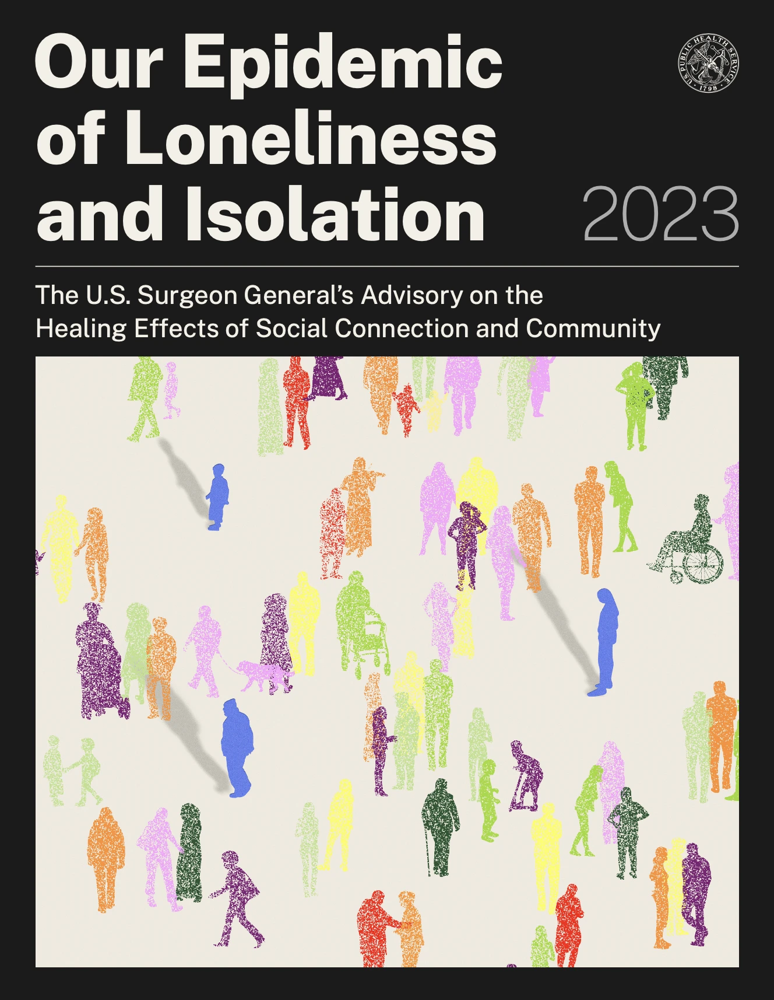
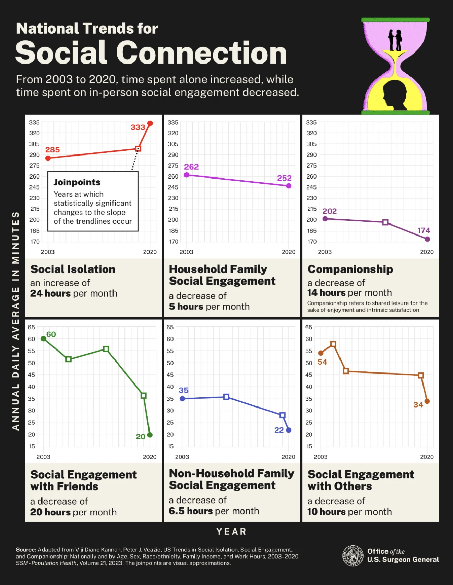
Source: Our Epidemic of Loneliness and Isolation:The U.S. Surgeon General’s Advisory on the Healing Effects of Social Connection and Community, U.S. Dept of Health and Human Services, 2023
THIS AFFECTS OUR HEALTH...
“Over four decades of research has produced robust evidence that lacking social connection—and in particular, scoring high on measures of social isolation—is associated with a significantly increased risk for early death from all causes.”
2020 Consensus Study Report, National Academies of Sciences Engineering and Medicine
A synthesis of data across 16 independent longitudinal studies shows poor social relationships (social isolation, poor social support, loneliness) were associated with a 29% increase in the risk of heart disease and a 32% increase in the risk of stroke.
A three-year study of 26 cities in the U.S. found that those with the highest levels of resident attachment experienced the greatest growth in GDP during the study period.
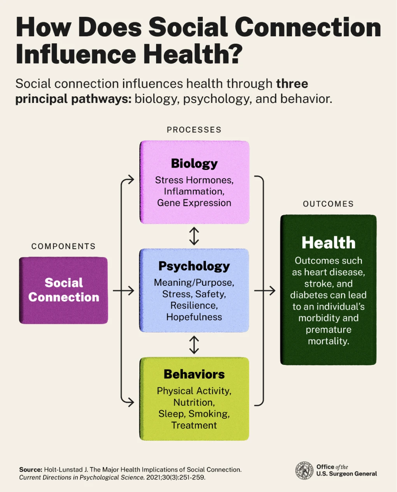
Source: Our Epidemic of Loneliness and Isolation:The U.S. Surgeon General’s Advisory on the Healing Effects of Social Connection and Community, U.S. Dept of Health and Human Services, 2023
...AND THE HEALTH OF OUR SOCIETY.
ATTACHMENT = GDP GROWTH A three-year study of 26 cities in the U.S. found that those with the highest levels of resident attachment experienced the greatest growth in GDP during the study period.
2X THE DIVISION Growing ideological divisions in America are fueling skepticism and even animosity between groups across the political divide: sentiments of enmity and disapproval between Democrats and Republicans more than doubled between 1994 and 2014.
DECREASED VIOLENCE One recent study on community violence showed that a one standard deviation increase in social connectedness was associated with a 21% reduction in murders and a 20% reduction in motor vehicle thefts.
INCREASED SURVIVAL On average, a one-unit increase in social capital increases the likelihood of survival by 17% and of self-reporting good health by 29%.
OUR CONNECTION TO NATURE IS KNOWN TO IMPROVE OUR HEALTH...
Alien/Nation, 2021 Season
OUR CONNECTION TO NATURE IS KNOWN TO IMPROVE OUR HEALTH...
“I think one of the greatest benefits that we have is really that we get a sense that we exist in a context that’s greater than our own points of view. You go on the mountain, and you get just...filled with the majesty of what you see around you. It makes you feel very, very small.... So, really, that...acceptance of [things within] us...that are going on around us, beyond our control, I think, is one of the greater things that we can learn.”
Asian man, early 50s, Bachelor’s, high income
Source: The Nature of Americans: Disconnection and Recommendations for Reconnection, 2017
The study examined data from nearly 20,000 people in England who took part in the Monitor of Engagement with the Natural Environment Survey from 2014 to 2016, which asked them to record their activities within the past week. It found that people who spent two hours a week or more outdoors reported being in better health and having a greater sense of well-being than people who didn’t get out at all.”
Source: “How Much Nature Is Enough? 120 Minutes a Week, Doctors Say,” NY Times, 2019
“Nature deprivation, a lack of time in the natural world, largely due to hours spent in front of TV or computer screens, has been associated, unsurprisingly, with depression. More unexpected are studies by Weinstein and others that associate screen time with loss of empathy and lack of altruism. And the risks are even higher than depression and isolation. In a 2011 study published in the Journal of the American College of Cardiology, time in front of a screen was associated with a higher risk of death, and that was independent of physical activity.”
Source: “How Does Nature Impact Our Wellbeing?,” University of Minnesota
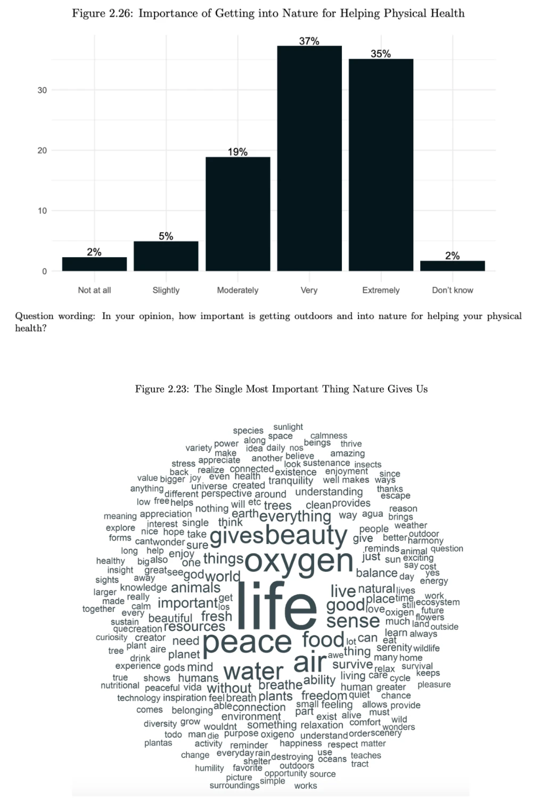
...BUT WE’RE CONSISTENTLY DISCONNECTED FROM IT.
During a typical week, about half of adults surveyed reported spending between 0 and 5 hours outside in nature, and the majority reported spending fewer than 10 hours outside in nature per week.
Source: The Nature of Americans: Disconnection and Recommendations for Reconnection, 2017
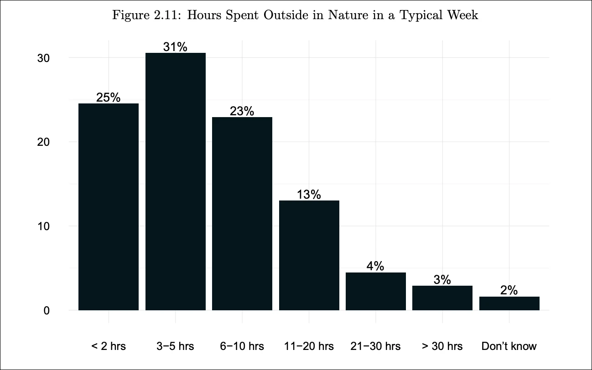
“These kids won’t even go outside, they want to stay in and there’s video games and these telephones... I was telling a lady the other day... “You go in the doctor’s office, you can’t even get a conversation with nobody because everybody into that phone.” So it’s very little of today that nature plays a part, very little.”
black woman, early 20s, HS degree, low income
Source: The Nature of Americans: Disconnection and Recommendations for Reconnection, 2017
“I think a lot of people have interest, but I don’t think a lot of people have time to really explore nature, because most of the people I know—I know even with me—it’s hard to find time to spend time with the family just at home. So I think people have interest, but time constraints prevent people from really exploring those interests, because you go to a job. A lot of people like to hang up pictures of...nature and stuff, but that’s about as close as a lot of people get because [of] time constraints. So—but I think interest is there.”
white man, late 30s, Associate degree, middle income
Source: The Nature of Americans: Disconnection and Recommendations for Reconnection, 2017
OUR ECONOMY HAS EVOLVED INTO AN EXPERIENCE ECONOMY.
3 IN 4
More than 3 in 4 millennials (78%) would choose to spend money on a desirable experience or event over buying something desirable, and 55% of millennials say they’re spending more on events and live experiences than ever before.
Source: Millennials: Fueling the Experience Economy, Eventbrite-Haris, 2014
OUR ECONOMY HAS EVOLVED INTO AN EXPERIENCE ECONOMY.
$12 BILLION
Location based entertainment (LBE) also called “out of home entertainment” or “family fun centers” implies any kind of entertainment which is tied to a specific place outside the home. ‘LBE’ environments have been launching all over the world, and the US is no exception. According to new projections from Greenlight Insights, the LBE marketplace is expected to grow to $12 billion by 2023 (making up about 11 percent of the VR industry).
Source: StoryTech Trends, CES, 2019
OUR ECONOMY HAS EVOLVED INTO AN EXPERIENCE ECONOMY.
70%
Live Nation found that fans are embracing the value brands can provide to the concert experience, with around 70% of live music goers agreeing that brands can enhance their time at the show.
Source: First Quarter Earnings, Live Nation, 2023
EXPERIENCES THAT INVITE SOCIAL CONNECTION AND PARTICIPATION ARE BIG BUSINESS.
8.5 BILLION
Spending on Beyoncé and Taylor Swift’s concert tours, Barbie, and Oppenheimer is expected to add about $8.5 billion to the economy in Q3 of 2023, according to a report by Morgan Stanley.
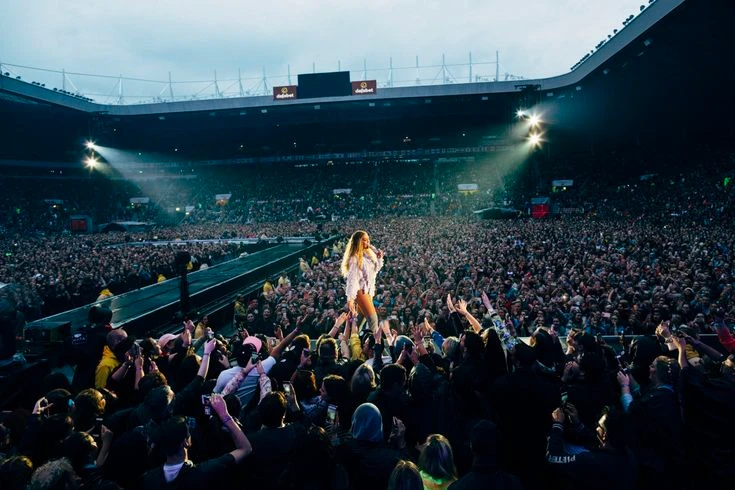
EXPERIENCES THAT INVITE SOCIAL CONNECTION AND PARTICIPATION ARE BIG BUSINESS.
The ALS Ice Bucket Challenge generated $115 million to the national ALS Association in 2014.
ORGANIZATIONS BUILT ON AN ETHOS OF SOCIAL CONNECTION THROUGH COMMON INTEREST HAVE FOUND SUCCESS.
San Diego Comic-Con is a major annual pop culture convention featuring comics, movies, TV shows, gaming, and fan interactions.
150K
150,000 attendees came to 2023’s event despite two major Hollywood strikes.
160M
ComicCon’s economic regional impact for 2023 was estimated at $160M.
ORGANIZATIONS BUILT ON AN ETHOS OF SOCIAL CONNECTION THROUGH COMMON INTEREST HAVE FOUND SUCCESS.
Coachella is an annual music and arts festival held in California, featuring diverse music genres and large-scale art installations.
500K
Coachella drew in ~500,000 attendees over the course of 2 weekends.
115M
Yearly, Coachella grosses around $115M in ticket sales, with millions more in food and beverages.
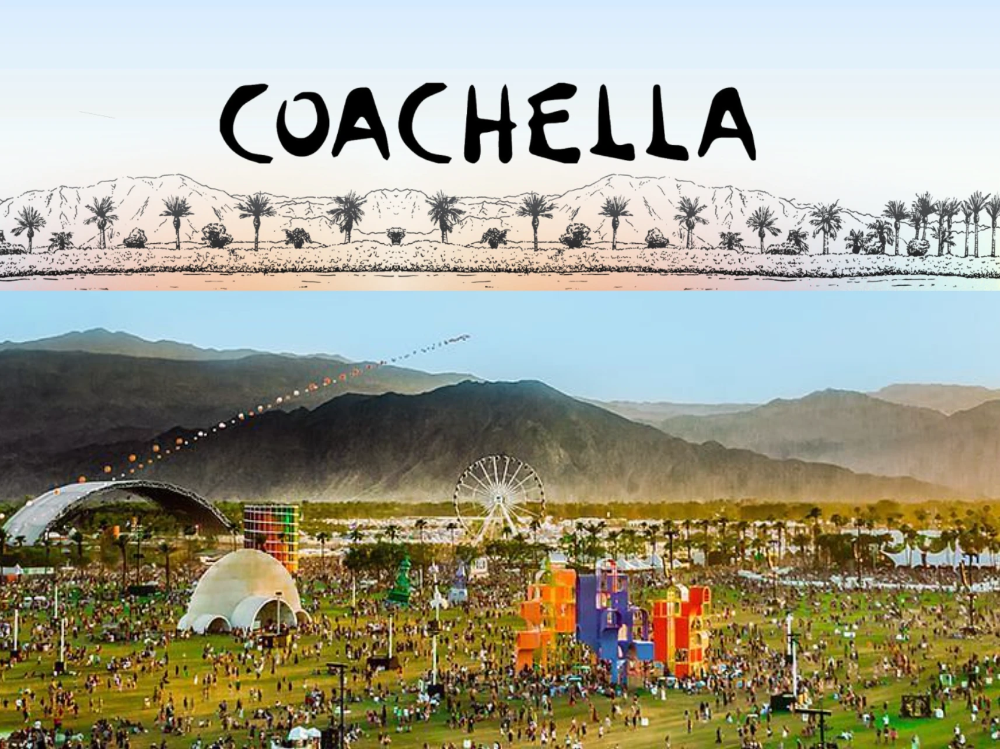
WILLIAMSTOWN THEATRE FESTIVAL EXISTS WITHIN A VIBRANT CULTURAL ECOSYSTEM, CENTERED IN NATURE AWAY FROM AN URBAN CENTER.
OUR REALITIES HAVE PRIMED US FOR REINVENTION:
WE CAN TACKLE SOME OF TODAY’S CHALLENGES
creating social connection through theatre in our natural environment can give audiences and artists respite from isolation and immersion into nature.
WE HAVE A BLANK SLATE TO BUILD FROM
as a 70-year old institution we have a rare combination of a powerful legacy with equity and a bare bones organization. We have a small thing that we can grow into something much larger.
OUR BOARD AND LEADERSHIP ARE COMMITTED
we have a dedicated and determined board who fully support our organization and its need for transformation. We’re collectively excited and motivated by the promise of the future.
What has happened for 70 summers in Williamstown is hard to describe to those who have not been. It’s a coming together of people and place, talent and town, star power and service to the craft. It is alchemy.
But, the American theatre is in peril. The pandemic decimated our audiences. A global racial reckoning surfaced our industry’s exclusivity and bias. A national labor reckoning challenged our way of working. Funding, as part of a sector-wide drought, is scarce. And the American theatre doesn’t hold the same cultural relevance and impact as it did 70 years ago.
As our screens distance us further from a tangible reality, gathering becomes an increasingly radical act. Theatre is gathering—a shared communal experience that sparks understanding, connection, joy, and discovery. And so, theatre can heal, help us cope, and help us live longer, better lives. Theatre creates the conditions for personal and societal transformation.
In a rapidly changing world, our industry is being called to respond to our challenges with innovation, breaking new ground, and inventing different ways forward. Pushing our time-tested form to tackle current realities of our society: widespread isolation, disconnection from nature, ideological division and social disparity. A better future depends on it.
Williamstown Theatre Festival is a place of connection for people—to one another, to nature, to difference, to diversity, to culture, to theatre.
We craft transportive experiences for audiences. We cultivate new ways of working and learning for artists. We nurture the local community that nurtures us, lifting the region of the Berkshires, its environment and its local economy. We build bridges of access to the American theatre through our platforms. We shape generations of theatre-makers and theatre-goers.
Williamstown Theatre Festival brings us together and transforms us. Because there’s nothing else like it when WTF is happening.
OUR KEY INSIGHT: OUR DIAGNOSIS OF WHAT’S HAPPENING IN THE CATEGORY
Shifts in American culture have taken audiences away from a live theatre habit, challenging the theatre’s relevance and impact in our country.
OUR CORE BELIEF: WHAT WE SEE AS THE CHALLENGE TO BE SOLVED
Theatre and storytelling should be a key to a connected humane society as our lives become more isolated.
OUR VISION: WHAT WE’LL BE KNOWN FOR
We create deeper connection* through an expansive expression of theatre.
*connection to: other people, nature, belonging, culture, industry, community
WHY WE CAN DO IT: PROOF POINTS THAT ARE UNIQUE AND RELEVANT
Our legacy as stewards of the modern American theatrical landscape
Our roots in the Berkshires, a countryside cultural hub centered in nature
Our expansive and influential alumni network of industry leaders and stars
Create a culture that values safety, generosity, humility, and experimentation
Lead with a visionary and inspiring POV
Embrace and engage our local community, in all forms
Establish a nimble model of resilience
See beyond our perceived limitations
WE’LL HONE IN ON A FEW KEY PRIORITIES TO ENABLE OUR FUTURE:
CRAFT A HOLISTIC BRAND, POWERED BY A CONTENT ECOSYSTEM.*
*To expand our audience across physical and digital channels and create a platform that can support the creative development and brand building of intellectual property.
REBUILD OUR CREATIVE DEVELOPMENT INITIATIVES.*
*Individual artist development via educational and residency programs, and new work and IP development via commissions, workshops, and readings.
FORGE NEW PARTNERSHIPS.*
*With brands to bring the world of business and marketing closer to the form of theatre, and with institutions to scale our impact.
CRAFT A HOLISTIC BRAND, POWERED BY A CONTENT ECOSYSTEM
WE’LL FOCUS AND EXPAND OUR DIGITAL AND PHYSICAL CHANNELS OF ENGAGEMENT TO GROW OUR AUDIENCE.
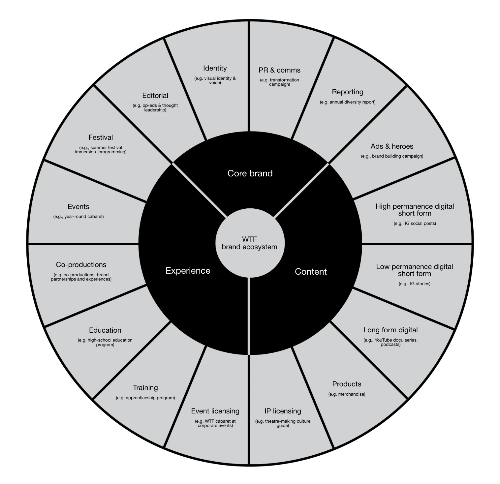
WTF 2.0 = DYNAMIC ANNUAL PROGRAMMING:
SEPTEMBERMAY
POST-/PRE-FESTIVAL CONTENT
We’re starting with a vision for our organization that will require an investment in development. From the programs that have been essential to our organization in the past to successful businesses out in the world in the present, we’re using our learnings to create a new model for the future.
Full-year digital programming
Think: an entire annual programming calendar that debriefs last year’s festival and previews next year’s with digital content like docuseries or podcasts that are either process-oriented (like: MASTER CLASS) or content-oriented (like: SERIALS)
Products and merchandise
Think: process-oriented (like: “putting on a show” kits), and content-oriented (like: LEMPICKA painting kits)
One-offs through partnerships, licensing, and producing
Think: experiences we create with/for brands, productions we co-produce regionally, cabarets we produce outside of the festival
Note: all programming will have opportunities for partnerships and brand activations to generate additional revenue, reach an expanded audience, and create mutual brand benefit.
JUNEAUGUST
SEASONAL FESTIVAL
Multiple layers of programming would allow us to create different tiers of access ranging from all-inclusive premium packages to single ticket purchases.
Traditional programming
Think: live theatre, Cabaret, Readings/Workshops, free theatre
Untraditional programming
Think: stand-up comedy, live music, spoken word poetry
Experiential programming
Think: high tech interactive storytelling experiences using AR/VR/AI, culinary experiences
SUPPORTING DYNAMIC PROGRAMMING…
Sample Festival Prototype 1: The Tragicomedy of Family
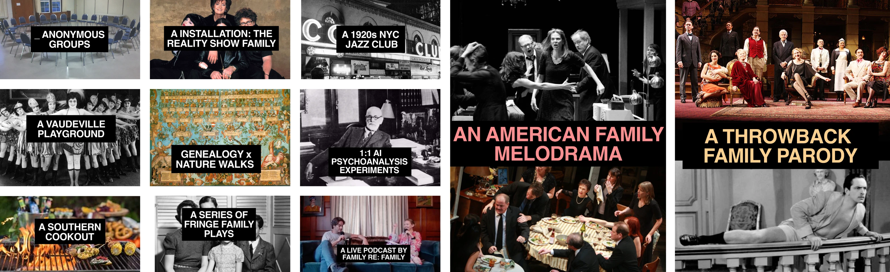
SUPPORTING DYNAMIC PROGRAMMING…
Sample Festival Prototype 2: Expansiveness of Im/Possibility
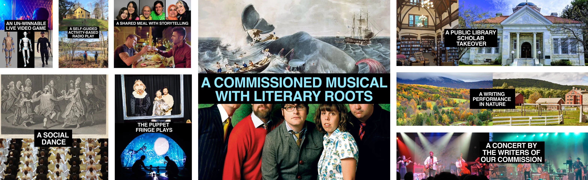
...WITH COMPELLING CONTENT.
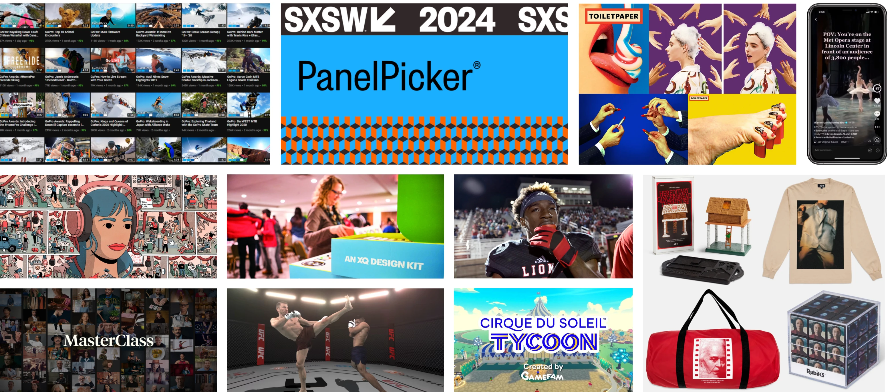
CREATING AN ECOSYSTEM THAT CAN:
Foster community and participation to and through our work
Build up the brands of intellectual property
Connect the principles of theatre and theatre-making to our world and our culture
THERE ARE SUCCESSFUL BRANDS WE CAN LOOK TO THAT SHOW US THE REVENUE POTENTIAL OF A CONTENT ECOSYSTEM:
Obsessed Network is a collection of True Crime Podcasts, ranging from True Crime Obsessed (a comedic recap series of True Crime shows) to investigative and historical crime podcasts. Over the years, they’ve also grown to include live festivals, tours and books.
45K
monthly subscribers on Patreon at $10 per month
27M
guaranteed annual ad revenue
50M
podcast downloads
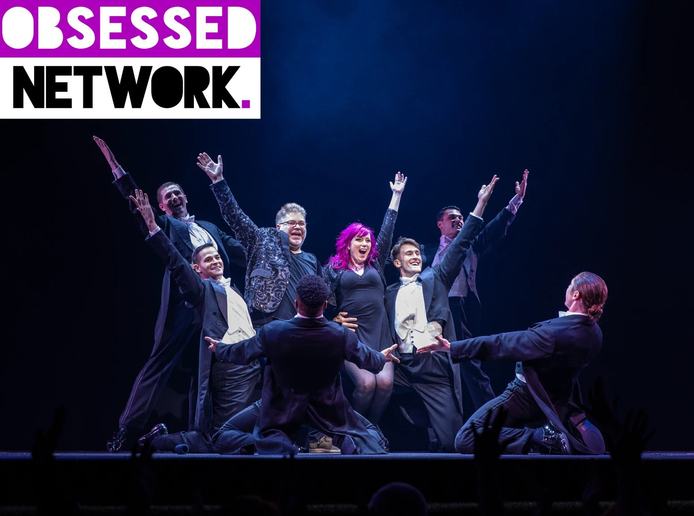
THERE ARE SUCCESSFUL BRANDS WE CAN LOOK TO THAT SHOW US THE REVENUE POTENTIAL OF A CONTENT ECOSYSTEM:
Blippi, a children’s character created by entertainer Stevin John, was introduced to the world in 2014 with interactive learning videos for preschoolers on YouTube. Today Blippi is a full brand, with licensing partnerships, deals with streamers, products, and tours, all in addition to its source content on YouTube.
62M
subscribers on YouTube across all channels
$25M
estimated annual licensing revenue
$25K
estimated daily ad revenue on the main YouTube channel
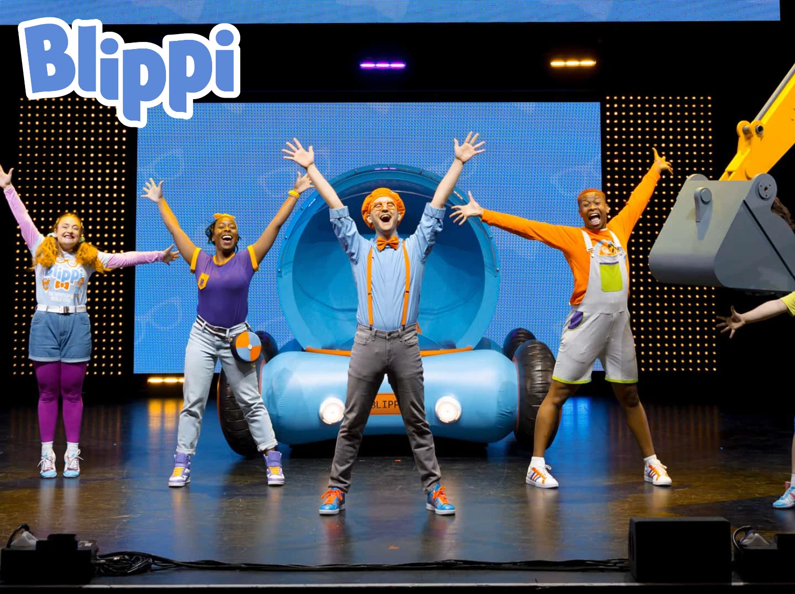
REBUILD OUR CREATIVE DEVELOPMENT INITIATIVES
WE ARE PLANTING THE SEEDS FOR RETHINKING HOW THEATRE GETS MADE, CREATING SPACE FOR A DIVERSE* SET OF
Artists who can have agency over the work they make and how they make it, growing through the process.
*In our organizational design, we’re creating an infrastructure of policies and processes that will embed diversity, equity, and inclusion into our organization, opening up access for artists across disciplines through our programming and programs. We believe that the makeup of our artists should reflect our world, and that it’s an imperative to center fresh voices and fresh thinking.
WE ARE PLANTING THE SEEDS FOR RETHINKING HOW THEATRE GETS MADE, CREATING SPACE FOR A DIVERSE* SET OF
Residencies
Provide housing and resources for companies, directors, playwrights, and producers, to create and develop their next best thing.
Apprenticeships
Partner rising professionals with working professionals at the festival for hands-on learning via a comprehensive apprenticeship program.
Internships
Give students the opportunity to be right in the action of our year-round organization, applying theory to practice via a revitalized internship program.
WE ARE PLANTING THE SEEDS FOR RETHINKING HOW AUDIENCES EXPERIENCE THE FORM, CREATING A FERTILE GROUND FOR BOUNDARY-PUSHING
Projects that can expand our understanding of theatre.
WE ARE PLANTING THE SEEDS FOR RETHINKING HOW AUDIENCES EXPERIENCE THE FORM, CREATING A FERTILE GROUND FOR BOUNDARY-PUSHING
Artist-first productions
We’ll start with the people we want to work with and the ideas that are exciting them the most, giving artists agency over the work they make and how they make it, and providing the resources and support required for success.
IP commissions
We’ll start with the worlds we want to build, commissioning work that will expand the definition of theatre and tasking makers to think of their work as expansive properties that start on the stage but engage audiences across mediums.
Partnerships
We’ll start with the ambitions of our partners that will help us scale the impact of theatre, investing in work that uses the medium of theatre to progress society and the world.
WE ARE PLANTING THE SEEDS FOR RETHINKING HOW AUDIENCES ENGAGE WITH THE FORM, CREATING COHESIVE AND HOLISTIC
Experiences that can shift audience expectation and engagement.
WE ARE PLANTING THE SEEDS FOR RETHINKING HOW AUDIENCES ENGAGE WITH THE FORM, CREATING COHESIVE AND HOLISTIC
Intentional experiences
Experiences of our artists and audiences will be intentionally designed to create consistency for what people experience and how they experience it at WTF.
Open feedback loops
Feedback and learnings from our stakeholders will inform how we evolve and grow over time, putting the needs and desires of our constituents alongside artistic ambition.
Learnings for impact
We’ll share what we’ve learned from our audiences and artists with the world through programs, materials, partnerships, and content to use theatre as a means for impact.
FORGE NEW PARTNERSHIPS
WE’LL PARTNER WITH BRANDS TO BRING THEATRE FORWARD AS A TOOL TO FOSTER CONNECTION.
WE’LL PARTNER WITH INSTITUTIONS TO SCALE OUR IMPACT.
Our internal and external systems for the next iteration of our business are fully designed and readied for implementation
We’ve refreshed our brand, marketing, and communications and have begun to signal our transformation with internal and external stakeholders
We have the funding required to jumpstart the implementation of our vision for the next 3-5 years
2025
Build and test a prototype
What success looks like…
Our business function is more aligned with our vision, and we have clear plans for refinement and growth
We’ve produced both year-round and seasonal programming that fully reflects our vision
We’ve begun to build revenue streams of earned income, further identifying priorities for growth
2026
Iterate our prototype
What success looks like…
We’ve refined our business function and have begun to create resilience and stability
We’ve produced another successful wave of year-round and seasonal programming that fully reflects our vision
We’ve focused on the strategic priorities that have allowed us to grow our revenue and our business
2027
Build our work
What success looks like…
Our business function is fully optimized for our ambition
We’re planning and producing year-round and seasonal programming that reflects our vision and is meeting our ambition to build new audiences, connect with existing audiences, and engage with and influence culture
We’ve achieved growth across our key priorities and are moving toward a self-sustainable model
2028
Scale our work
What success looks like…
We have a fully functioning organization, and are growing with our business
Our programming continues to meet our ambitions, growing audiences and increasing engagement
We’ve continued growth across our key priorities and are closer to a self-sustained model
We’ve established key partnerships that scale our impact
Transformation startup investment
$2,250,000
Current proposed festival budget*
$4,309,678
*Under review by the board
Operational budget
$3,600,000
Festival budget
$2,500,000
Operational budget
$3,800,000
Festival budget
$4,000,000
Operational budget
$3,800,000
Festival budget
$4,000,000
Operational budget
$3,800,000
Festival budget
$4,000,000
HOW WE’LL INVEST
2024
Design our foundation
Target contributed revenue: 95%
Target earned revenue: 5%
Produced content
One off events/prototypes
2025
Build and test a prototype
Target contributed revenue: 85%
Target earned revenue: 15%
Produced content
Prototype festival
2026
Iterate our prototype
Target contributed revenue: 65%
Target earned revenue: 30%
Produced content
Brand partnerships
Education
Prototype festival
2027
Build our work
Target contributed revenue: 40%
Target earned revenue: 60%
Produced content
Brand partnerships
Education
Intellectual property
Immersion festival
2028
Scale our work
Target contributed revenue: 30%
Target earned revenue: 70%
Produced content
Brand partnerships
Institutional partnerships
Education
Intellectual property
Licensing
Immersion festival
Year-round events